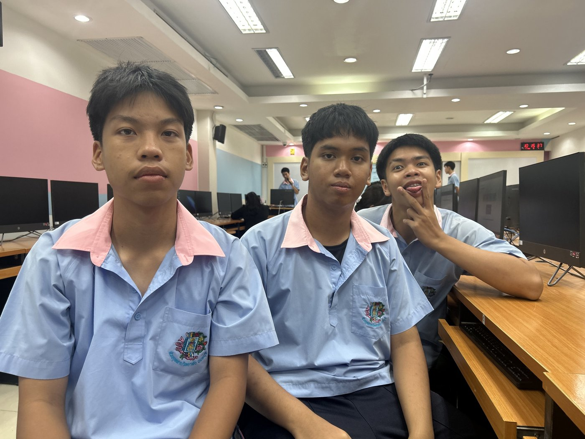

About Us
Why we built this site
A student project sharing the mountains, mist and farms of Phetchabun with more travelers.
The team
Made by three students from ม.6/2
This site was created as a class project to promote tourism in Phetchabun province — researched, designed and built by:

นายเปรมณัฐ พัฒนดุล
ม.6/2 เลขที่ 6
นายพีรวิชญ์ รัตนาภิรมย์
ม.6/2 เลขที่ 7
นายวรท ต้นงาม
ม.6/2 เลขที่ 25